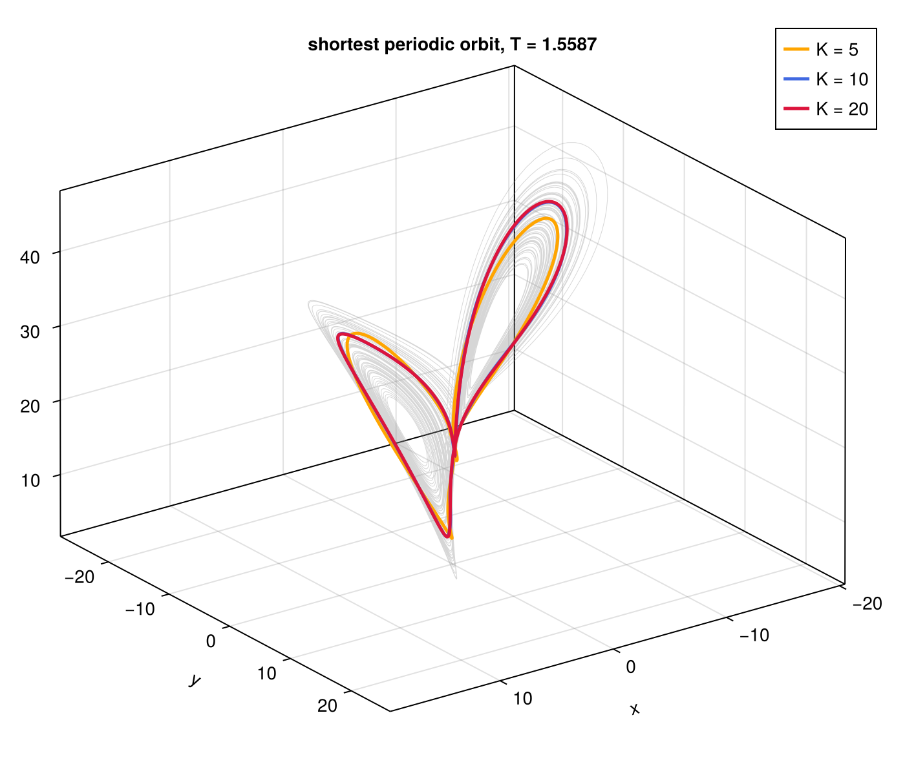
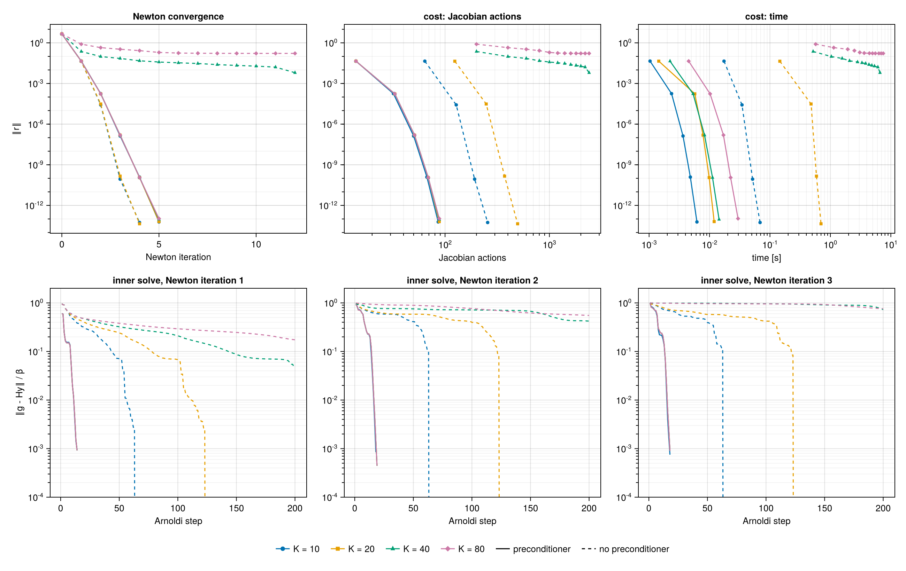
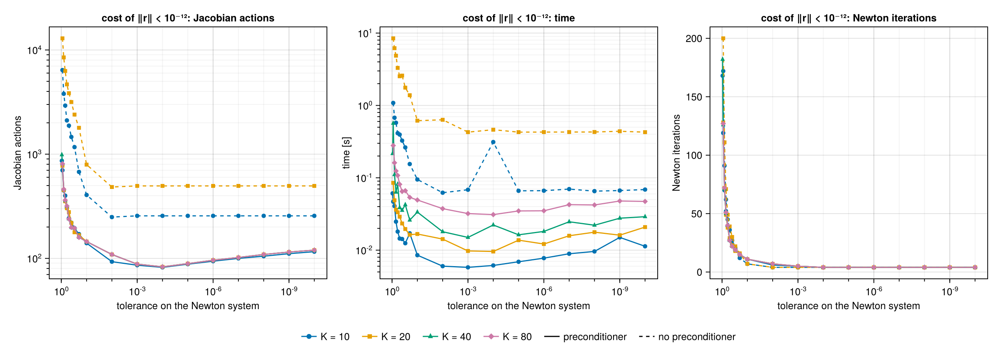
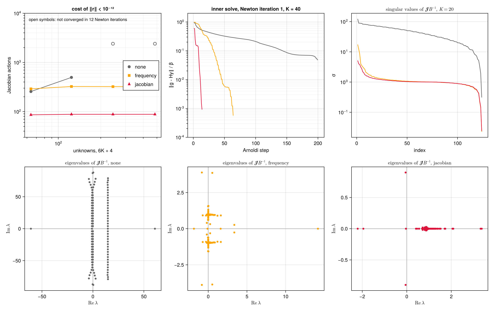

Lorenz system
The Lorenz system is the smallest setting in which the space-time formulation can be studied in full: its orbits are smooth, its Jacobian can be formed and analysed as a dense matrix, and yet the time derivative alone already makes the space-time problem stiff. This page computes its shortest periodic orbit, studies the convergence of the hookstep at increasing resolution, and compares three preconditioners. The scripts are in examples/lorenz/: lorenz.jl defines the model, example.jl, convergence.jl and preconditioners.jl produce the figures.
Problem
The Lorenz system
\[\dot x = \sigma (y - x), \qquad \dot y = x(\rho - z) - y, \qquad \dot z = x y - \beta z , \tag{1}\]
with the standard parameters $\sigma = 10$, $\rho = 28$, $\beta = 8/3$, has a chaotic attractor densely filled with unstable periodic orbits. The shortest one, which winds once around each of the two unstable fixed points, has period $T \approx 1.5587$. The system has no continuous symmetry, so the orbits are periodic, $c = 0$, and the unknowns are the state over one period and the log-frequency $\rho_\omega = \log\omega$. (The symbol $\rho$ is kept for the Lorenz parameter on this page.)
Discretisation
The state is expanded in $K$ Fourier modes in rescaled time,
\[u(s) = \hat u_0 + 2\,\mathrm{Re} \sum_{n=1}^{K} \hat u_n\, e^{\mathrm{i} n s}, \qquad u = (x, y, z) , \tag{2}\]
and a LorenzField stores the coefficients $\hat u_n$, $n = 0, \dots, K$: three real coefficients for $n = 0$ and three complex ones for each $n \ge 1$. With the log-frequency, the problem has
\[N = 3(2K + 1) + 1 = 6K + 4 \tag{3}\]
real unknowns: 64, 124, 244 and 484 for $K = 10$, $20$, $40$ and $80$. The inner product is the mean over $s$ of the products of the states, which on the coefficients reads
\[\langle u, v\rangle = \hat u_0 \cdot \hat v_0 + 2\,\mathrm{Re} \sum_{n \ge 1} \overline{\hat u_n} \cdot \hat v_n . \tag{4}\]
The derivative $\partial_s$ multiplies $\hat u_n$ by $\mathrm{i}\,n$ and is exactly skew-adjoint in (4). The nonlinear terms are evaluated pseudo-spectrally: the coefficients are transformed to $4K + 1$ equispaced points in $s$, which removes the aliasing of the quadratic products, the right-hand side of (1) or its Jacobian $J(u)$ is applied point by point, and the result is transformed back and truncated to $K$ modes. Because the truncation is the adjoint of the zero padding in the inner product (4), applying $J(u)^\top$ point by point gives the exact adjoint of the discrete linearised operator.
Initial guess
A trajectory of (1) is integrated with a fourth-order Runge–Kutta scheme, step $0.005$, for 100 time units after a transient of 20. The best near-recurrence with period between 1.4 and 1.7 has a relative error $\lVert u(t_0 + T_0) - u(t_0)\rVert / \lVert u(t_0)\rVert = 0.002$ with $T_0 = 1.5600$. The segment from $t_0$ is integrated again on the $4K + 1$ points of the grid, and its coefficients form the initial orbit.
The shortest orbit
The hookstep, with the block preconditioner described below, converges from this guess to $\lVert r\rVert < 10^{-12}$ in 4 to 8 Newton iterations:
| $K$ | unknowns | Newton iterations | period $T$ | $T - T_{K=20}$ |
|---|---|---|---|---|
| 5 | 34 | 8 | 1.57674231 | $1.8 \times 10^{-2}$ |
| 10 | 64 | 5 | 1.55873614 | $8.4 \times 10^{-5}$ |
| 20 | 124 | 4 | 1.55865221 | — |
The period converges spectrally with $K$, as expected for a smooth orbit, and $K = 20$ gives $T = 1.55865221$, in agreement with the value reported in the literature for this orbit (e.g. Viswanath 2003).

The shortest periodic orbit on the attractor (grey), with $K = 5$, $10$ and $20$ modes. The curves for $K = 10$ and $20$ coincide; with $K = 5$ the orbit is visibly under-resolved.
Convergence of the hookstep
To study the solver close to the solution, the orbit converged with $K = 20$ is resampled to $K = 10$, $20$, $40$ and $80$, its log-frequency is perturbed by $0.01$ and its field by 1% on the five lowest modes, the same perturbation at every resolution. The perturbation of the field matters: perturbing the frequency alone gives a residual aligned with a single column of the Jacobian, $\omega\,\partial_s u$, which any Krylov solver finds in two steps, and hides the difficulty of the problem. The hookstep is run with the Newton system solved to a relative residual $\tau = 10^{-3}$, without and with the block preconditioner.

Top: residual against the Newton iterations, the Jacobian actions and the computing time. Bottom: relative residual of the Newton system after each Arnoldi step, for the first three Newton iterations. Solid lines: block preconditioner; dashed: none.
| $K$ | unknowns | Jacobian actions, no preconditioner | Jacobian actions, preconditioner |
|---|---|---|---|
| 10 | 64 | 256 | 86 |
| 20 | 124 | 496 | 88 |
| 40 | 244 | 2400, not converged in 12 iterations | 88 |
| 80 | 484 | 2400, not converged in 12 iterations | 88 |
With the preconditioner, Newton converges in 5 iterations at every resolution and each inner solve reaches $10^{-3}$ in 15 to 20 Arnoldi steps: the cost does not depend on the number of unknowns. Without it, every inner solve stalls on a plateau, $\lVert g - Hy\rVert / \beta$ between $10^{-1}$ and $10^{-2}$, until the Krylov space spans almost the whole problem; the residual then drops in a single step, at an Arnoldi step equal to the number of unknowns. The cost of each Newton iteration is therefore proportional to $N$, and from $K = 40$ the Krylov spaces of 200 vectors no longer suffice.
Tolerance of the inner solve
The tolerance $\tau$ of the Newton system trades the cost of each Newton iteration against their number. The figure below shows the cost of bringing $\lVert r\rVert$ below $10^{-12}$ for $\tau$ from $0.95$ to $10^{-10}$.

Cost of $\lVert r\rVert < 10^{-12}$ in Jacobian actions, time and Newton iterations, against the tolerance on the Newton system. Missing points did not converge within 200 Newton iterations. Without preconditioner only $K = 10$ and $20$ are shown.
With the preconditioner the cost has a broad minimum, about 83 Jacobian actions at $\tau = 10^{-4}$, and is the same at every resolution. Tightening the tolerance further costs little: Newton converges quadratically in 4 or 5 iterations whatever $\tau$, and each extra digit of the inner solve costs one or two Arnoldi steps, because the preconditioned spectrum is clustered and GMRES converges at a fast, steady rate; at $\tau = 10^{-10}$ the cost is about 118 actions, 40% above the minimum. Loosening it is far more expensive: for $\tau \ge 0.5$ the Newton steps are poor approximations of the exact ones, the outer iteration converges only linearly, at a rate set by $\tau$, and needs between 100 and 200 Newton iterations at $\tau = 0.95$. This is the classical picture of inexact Newton methods (Dembo, Eisenstat & Steihaug 1982): the outer convergence is linear with rate $\tau$, and a forcing term that is too small is wasted work once the outer residual is dominated by the error of the linearisation.
Without preconditioner the picture is different. For $\tau \le 10^{-2}$ the cost is a constant, 256 actions for $K = 10$ and 496 for $K = 20$: four Newton iterations, each with a Krylov space that spans the whole problem, 64 or 124 vectors, because GMRES does not reduce the residual until it does. The tolerance then makes no difference, the solve is exact. For looser tolerances the cost grows by more than an order of magnitude, up to $1.3 \times 10^{4}$ actions at $K = 20$: the plateau of the inner solve ends at relative residuals between $10^{-1}$ and $10^{-2}$, so that a loose tolerance stops GMRES early, on the plateau, with a poor step; the number of Newton iterations is then the same as with the preconditioner, but each of them costs many more actions. The time, dominated at these sizes by the dense linear algebra of the hookstep rather than by the actions, follows the same trends.
Preconditioners
Three preconditioners are compared, all block diagonal over the modes, with one $3 \times 3$ block per $n$:
| name | block on the mode $n$ | captures |
|---|---|---|
| none | $I$ | nothing |
| frequency | $(1 + \omega_0 n)\, I$ | the time derivative $\omega\,\partial_s$ |
| jacobian | $\mathrm{i}\,\omega_0 n\, I - J(\bar u)$ | the linear space-time operator about the mean state $\bar u = \hat u_0$ |
On the log-frequency all three divide by $\lVert \omega_0\,\partial_s u_0\rVert$. The jacobian preconditioner is the space-time operator $A = \omega\,\partial_s - L$ of the Search by root finding with the Jacobian frozen at the mean state: the orbit oscillates around $\bar u \approx (0, 0, 23.5)$, where $J(\bar u)$ has eigenvalues $-13.58$, $-2.67$ and $2.58$.

Top left: Jacobian actions to $\lVert r\rVert < 10^{-12}$ against the number of unknowns, with $\tau = 10^{-3}$. Top centre: relative residual of the Newton system in the first Newton iteration, $K = 40$. Top right: singular values of $\mathcal{J}B^{-1}$ at the converged orbit, $K = 20$. Bottom: eigenvalues of $\mathcal{J}B^{-1}$, $K = 20$.
| $K$ | none | frequency | jacobian |
|---|---|---|---|
| 10 | 256 | 290 | 86 |
| 20 | 496 | 324 | 88 |
| 40 | not converged | 322 | 88 |
| 80 | not converged | 322 | 88 |
The spectra explain the costs.
- None. The eigenvalues of $\mathcal{J}$ lie on vertical lines in the complex plane, at $\mathrm{i}\,\omega n - \lambda_j(J(\bar u))$ approximately: one near $\mathrm{Re}\,\lambda = 14$, from the eigenvalue $-13.58$ of $J(\bar u)$, and two close to the imaginary axis, from $-2.67$ and $2.58$, extending to $\pm\,\omega K \approx \pm\, 80$ along it. GMRES cannot damp such a spectrum with a polynomial of low degree, and needs a Krylov space as large as the problem.
- Frequency. Dividing by $1 + \omega_0 |n|$ maps $\mathrm{i}\,\omega n$ to $\mathrm{i}\,\omega n / (1 + \omega_0 |n|) \to \pm\,\mathrm{i}$: the eigenvalues gather in two clusters on the imaginary axis, at $\pm\,\mathrm{i}$, independently of $K$. The cost becomes independent of the resolution, about 320 Jacobian actions, but two clusters on opposite sides of the origin require a polynomial that is small on both, and GMRES pays for it.
- Jacobian. Inverting the linear space-time operator maps its linear part to the identity: the eigenvalues gather in a single cluster near one, with a handful of outliers due to the variation of $J(u(s))$ along the orbit. GMRES damps the cluster and the outliers in 15 to 20 steps, and the cost drops to about 88 Jacobian actions at every resolution.
The singular values tell the same story only in part: the frequency and jacobian preconditioners have almost identical singular values, between $10^{-1}$ and $10$, and condition numbers of $7.7 \times 10^{2}$ and $2.2 \times 10^{2}$, against $4.0 \times 10^{2}$ without preconditioner. The condition number does not predict the cost; the location and clustering of the eigenvalues do, as expected for GMRES (see Preconditioning).
References
- R. S. Dembo, S. C. Eisenstat and T. Steihaug, Inexact Newton methods, SIAM J. Numer. Anal. 19, 400–408 (1982).
- D. Viswanath, Symbolic dynamics and periodic orbits of the Lorenz attractor, Nonlinearity 16, 1035–1056 (2003).